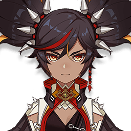
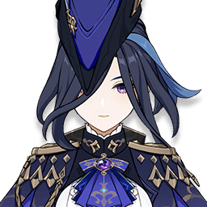
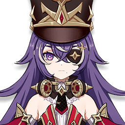
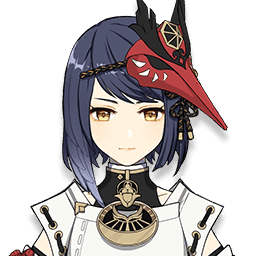

Персонажи / Синь Янь

Лучшие отряды: Синь Янь
4★ · Пиро · Двуручный меч · отрядов в базе: 45 · лучший DPS 73 742
Открыть в GI-Rec
Лучшие отряды
1 Кинич C0 Меч драконьей кости R1 Обсидиановый фолиант ×4 Оророн C6 Боевой лук Фавония R3 Свиток героя сожжённого города ×4 Синь Янь C6 Двуручный меч Фавония R3 Воспоминания дремучего леса ×4 Беннет C6 Вспышка во тьме R1 Церемония древней знати ×4 73 742DPS KQMS Симуляция 2 Нёвиллет C0 Жертвенный нефрит R1 Охотник Сумеречного двора ×4 Синь Янь C6 Двуручный меч Фавония R3 Архаичный камень ×4 Кадзуха C0 Меч Фавония R3 Изумрудная тень ×4 Шилонен C0 Меч Фавония R3 Свиток героя сожжённого города ×4 72 800DPS KQMS Симуляция 3 
Клоринда C0 Грандиозный финал глубин R5 Фрагмент гармонической фантазии ×4 Яэ Мико C0 Песнь странника R3 Золотая труппа ×4 
Шеврёз C6 Копьё Фавония R3 Свиток героя сожжённого города ×4 Синь Янь C6 Двуручный меч Фавония R3 Церемония древней знати ×4 65 950DPS KQMS Симуляция 4 Клоринда C0 Грандиозный финал глубин R5 Фрагмент гармонической фантазии ×4 Фишль C6 Охотник во тьме R1 Золотая труппа ×4 Шеврёз C6 Копьё Фавония R3 Свиток героя сожжённого города ×4 Синь Янь C6 Двуручный меч Фавония R3 Церемония древней знати ×4 62 382DPS KQMS Симуляция 5 Арлекино C0 Смертельный бой R1 Фрагмент гармонической фантазии ×5 Фишль C6 Бесструнный R3 Золотая труппа ×4 Шеврёз C6 Диалог пустынных мудрецов R5 Песнь былых времён ×4 Синь Янь C6 Двуручный меч Фавония R3 Церемония древней знати ×4 61 204DPS Симуляция 6 Клоринда C0 Чёрный меч R1 Фрагмент гармонической фантазии ×4 
Сара C6 Луна Моун R1 Свиток героя сожжённого города ×5 Шеврёз C6 Копьё Фавония R3 Песнь былых времён ×4 Синь Янь C6 Двуручный меч Фавония R3 Церемония древней знати ×4 60 882DPS KQMS Симуляция 7 Райдэн C0 Баллада фьордов R1 Эмблема рассечённой судьбы ×4 Эмилия C0 Смертельный бой R1 Незаконченные грёзы ×4 Фишль C6 Бесструнный R3 Золотая труппа ×4 Синь Янь C6 Аквамарин Махайры R1 Воспоминания дремучего леса ×4 60 065DPS KQMS Симуляция 8 Син Цю C6 Кагоцурубэ Иссин R1 Эмблема рассечённой судьбы ×4 Синь Янь C6 Двуручный меч Фавония R3 Стойкость Миллелита ×5 Е Лань C0 Боевой лук Фавония R3 Эмблема рассечённой судьбы ×4 Ху Тао C0 Смертельный бой R1 Воспоминания Симэнавы ×4 59 427DPS KQMS Симуляция 9 Синь Янь C6 Меч драконьей кости R1 Клятва долгой ночи ×4 Фурина C0 Меч Фавония R3 Стойкость Миллелита ×4 Беннет C6 Вспышка во тьме R1 Церемония древней знати ×4 Сянь Юнь C0 Око клятвы R5 Моллюск морских красок ×4 58 477DPS KQMS Симуляция 10 Ризли C0 Песнь странника R3 Охотник Сумеречного двора ×4 Беннет C6 Вспышка во тьме R1 Церемония древней знати ×4 Синь Янь C6 Двуручный меч Фавония R3 Архаичный камень ×4 Шилонен C0 Меч Фавония R3 Свиток героя сожжённого города ×4 56 693DPS KQMS Симуляция 11 Арлекино C0 Смертельный бой R1 Фрагмент гармонической фантазии ×5 Кадзуха C0 Лунное сияние ксифоса R1 Изумрудная тень ×4 Синь Янь C6 Двуручный меч Фавония R3 Стойкость Миллелита ×4 Беннет C6 Вспышка во тьме R1 Церемония древней знати ×4 56 047DPS KQMS Симуляция 12 Синь Янь C6 Меч драконьей кости R1 Клятва долгой ночи ×4 Фурина C0 Меч Фавония R3 Стойкость Миллелита ×4 Розария C6 Копьё Фавония R3 Церемония древней знати ×4 Сянь Юнь C0 Око клятвы R5 Моллюск морских красок ×4 55 839DPS KQMS Симуляция 13 Райдэн C0 "Улов" R5 Эмблема рассечённой судьбы ×4 Шеврёз C6 Смертельный бой R1 Золотая труппа ×4 Синь Янь C6 Меч драконьей кости R1 Церемония древней знати ×4 Беннет C6 Вспышка во тьме R1 Свиток героя сожжённого города ×4 55 472DPS KQMS Симуляция 14 Райдэн C0 Смертельный бой R1 Эмблема рассечённой судьбы ×4 Сара C6 Гаснущие сумерки R5 Церемония древней знати ×4 Синь Янь C6 Меч драконьей кости R5 Свиток героя сожжённого города ×4 Шеврёз C6 Копьё Фавония R3 Песнь былых времён ×4 54 804DPS KQMS Симуляция 15 Синь Янь C6 Меч драконьей кости R1 Клятва долгой ночи ×4 Розария C6 Копьё Фавония R3 Эмблема рассечённой судьбы ×4 Беннет C5 Вспышка во тьме R1 Церемония древней знати ×4 Сянь Юнь C0 Око клятвы R5 Моллюск морских красок ×4 54 647DPS Симуляция 16 Беннет C6 Вспышка во тьме R1 Церемония древней знати ×4 Шеврёз C6 Копьё Фавония R3 Эмблема рассечённой судьбы ×4 Фишль C6 Бесструнный R3 Золотая труппа ×4 Синь Янь C6 Меч драконьей кости R1 Отголоски подношения ×4 54 262DPS KQMS Симуляция 17 Синь Янь C6 Меч драконьей кости R1 Клятва долгой ночи ×4 Розария C6 Копьё Фавония R3 Церемония древней знати ×4 Фишль C6 Разбивающий цепи R5 Стойкость Миллелита ×4 Сянь Юнь C0 Око клятвы R5 Моллюск морских красок ×4 52 942DPS KQMS Симуляция 18 Райдэн C0 Смертельный бой R1 Эмблема рассечённой судьбы ×4 Фишль C6 Мелодия покоя R5 Золотая труппа ×4 Синь Янь C6 Тень волны R5 Церемония древней знати ×4 Шеврёз C6 Диалог пустынных мудрецов R5 Песнь былых времён ×4 52 767DPS KQMS Симуляция 19 Лини C0 Прототип: Полумесяц R5 Охотник Сумеречного двора ×4 Синь Янь C6 Двуручный меч Фавония R3 Стойкость Миллелита ×4 Кадзуха C0 Лунное сияние ксифоса R1 Изумрудная тень ×5 Беннет C6 Вспышка во тьме R1 Церемония древней знати ×4 52 227DPS KQMS Симуляция 20 Синь Янь C6 Тень волны R5 Эмблема рассечённой судьбы ×4 Фурина C0 Осквернённое желание R5 Золотая труппа ×4 Райдэн C0 "Улов" R5 Эмблема рассечённой судьбы ×4 Эскофье C0 Смертельный бой R1 Золотая труппа ×4 50 891DPS KQMS Симуляция
Вид по умолчанию: 5★ персонажи на C0, 4★ на C6, без 5★ оружия. Другие созвездия и оружие — в приложении.
Чаще всего в отряде с
Другие персонажи: Пиро
 Беннетотрядов: 21
Беннетотрядов: 21 Райдэнотрядов: 13
Райдэнотрядов: 13 Розарияотрядов: 13
Розарияотрядов: 13 Фишльотрядов: 11
Фишльотрядов: 11 Фуринаотрядов: 10
Фуринаотрядов: 10 Сянь Юньотрядов: 5
Сянь Юньотрядов: 5 Эмилияотрядов: 3
Эмилияотрядов: 3